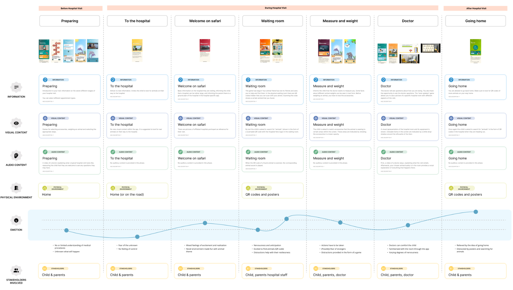
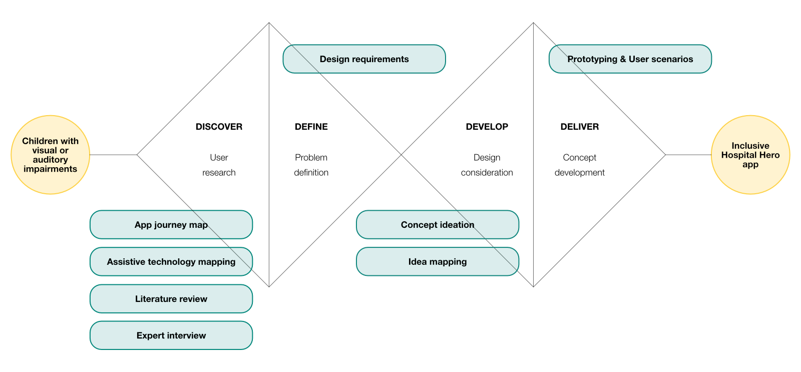
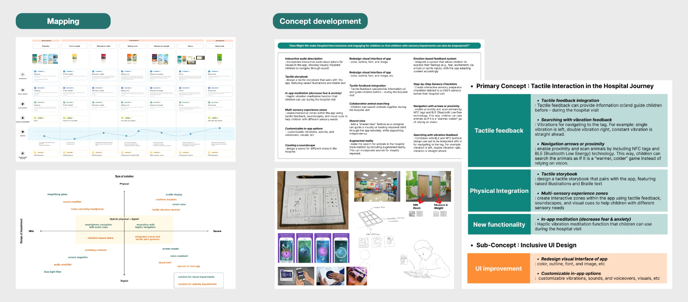
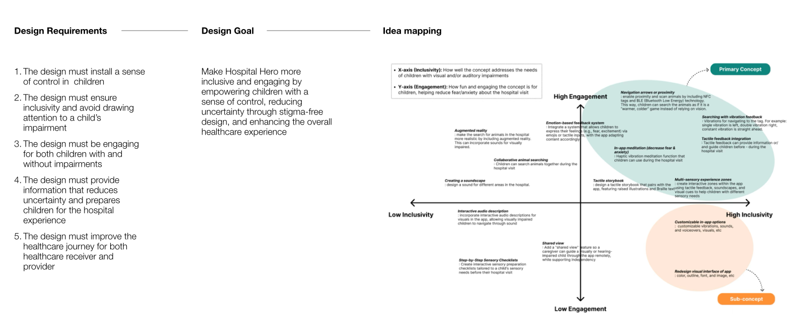
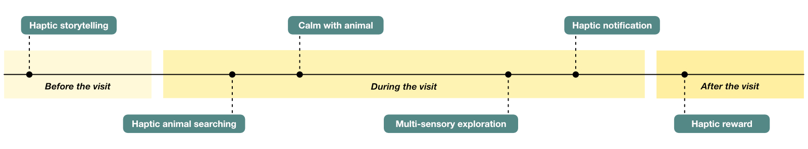
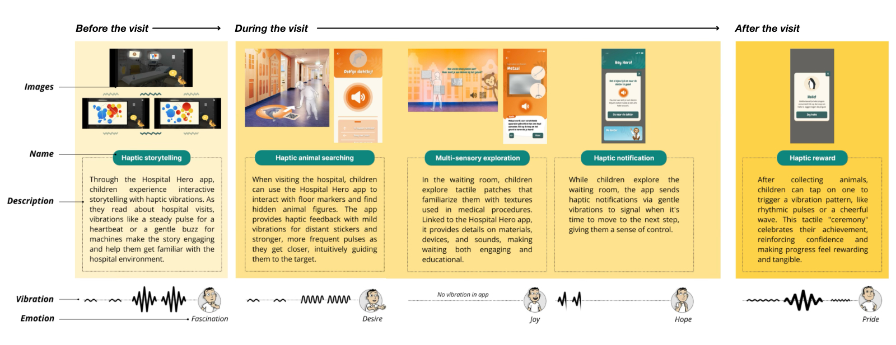

Making the Hospital Hero App More Inclusive for Children with Auditory or Visual Impairments
This project develops an inclusive design concept for a digital hospital service by enhancing the Hospital Hero app for children with auditory or visual impairments. Drawing from multiple research activities, including journey mapping and expert interviews, we identified key user needs and accessibility challenges. Based on these insights, a holistic hospital journey and inclusive app concept were designed.
How might we design an inclusive hospital experience for children with impairments?
Hospital Hero is currently used in several Dutch hospitals to help children prepare for medical procedures through storytelling, mini-games, and interactive guidance. The app reduces stress and makes hospital visits more playful and understandable. However, the app journey map revealed that many interactions remain highly visual or text-based. For children with visual or auditory impairments, this makes the experience less accessible, particularly for those who may need support the most. The goal was to improve the app’s inclusivity by addressing specific user needs and challenges.

To explore this gap, the existing Hospital Hero app journey were analyzed. The mapping revealed heavy reliance on visual and textual content and limited audio or multisensory elements. This analysis established the foundation for redesign — aiming to make Hospital Hero more inclusive and engaging, empowering children with a sense of control, reducing uncertainty, and avoiding stigmatizing add-ons through seamlessly integrated multisensory design.
Research process.
The research followed a structured double-diamond design process and a multi-step approach to develop an inclusive concept for the Hospital Hero app tailored to children with visual or auditory impairments.


Concept development based on design requirements.
From the research insights, core design requirements were defined. Using these requirements, a design goal was established and HMW (How Might We) ideation was conducted. Key concepts were selected through idea mapping across two factors: engagement and inclusivity. A primary concept was chosen, supported by several sub-concepts that provide fundamental UI changes to make the app more inclusive.

Holistic app improvement across the hospital experience.
The primary and sub-concepts were refined through iterative development and expert feedback. The primary concept, Tactile Interaction in the Hospital Journey, enhances the app by integrating tactile and physical elements that support information delivery, increase engagement, and provide comfort. The concept is strengthened by the sub-concept, Inclusive UI, which introduces fundamental UI improvements to better accommodate children with sensory impairments.

The new Hospital Hero journey connects tactile feedback, sound, and visual adaptability across each phase of the hospital visit. These multisensory layers enable children to explore, understand, and navigate with greater independence and confidence, turning the hospital experience into an engaging and reassuring story.

In addition, collaboration with experts led to the development of detailed inclusive UI guidelines to complement the tactile and multisensory improvements. These guidelines focus on ensuring accessibility through bright colour contrast, clear iconography, and legible typography while minimising distractions in the interface. They also recommend simple, high-contrast visuals, scalable text, and animated interaction cues to help children with visual or auditory impairments navigate confidently and independently. These visual refinements strengthen the holistic redesign of Hospital Hero, ensuring that inclusivity is embedded in both interaction and interface design.